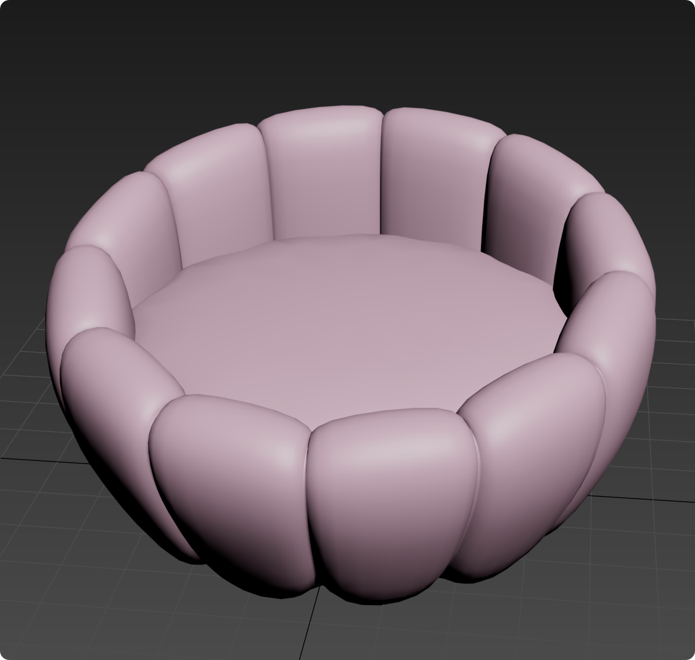
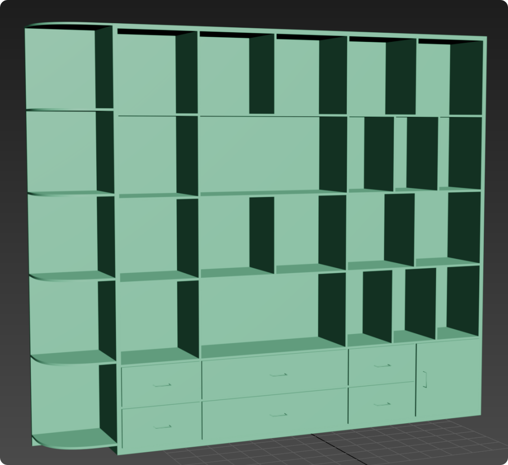
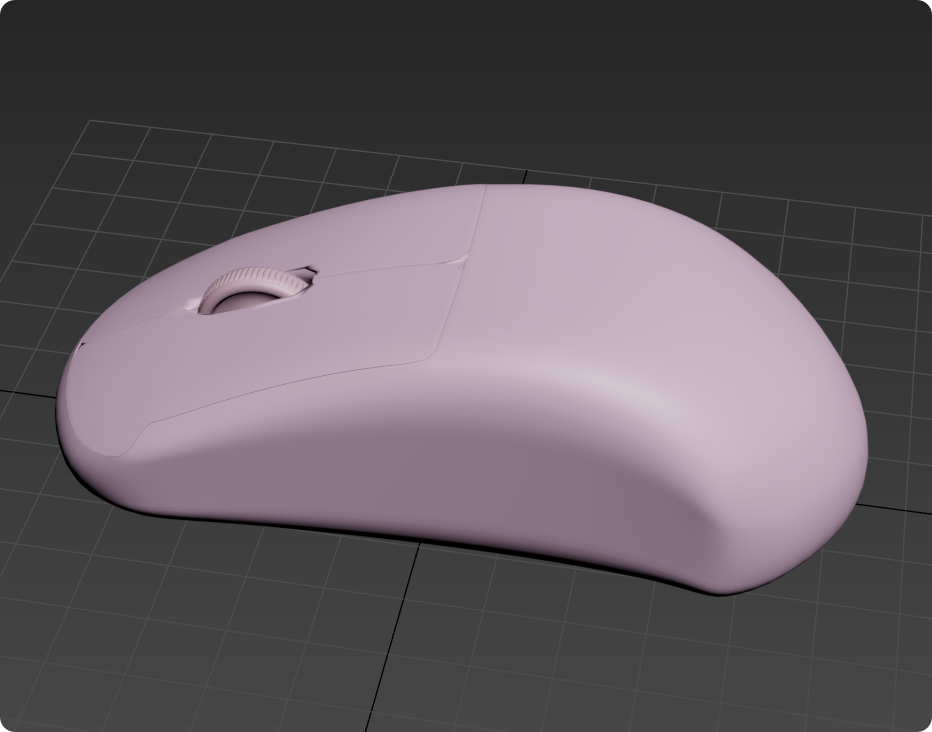
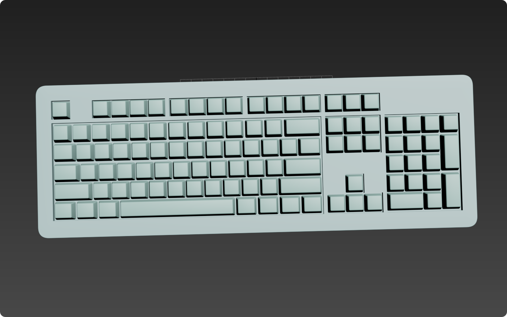
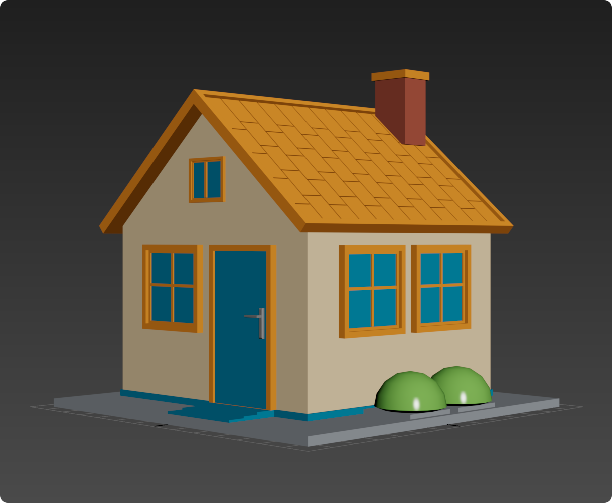

懒人沙发建模
边-环形、循环 连接
挤出
细分曲面
倒角

书柜建模
插入
圆角(切角)
连接 切角 挤出

显示屏建模
插入 挤出
倒角
捕捉开关
M材质编辑器 贴图

鼠标建模
切角 挤出(多边形、局部法线) 插入(组)
FFD 3×3×3
顶点焊接
Ctrl点多边形→选择多边形
涡轮平滑

键盘建模
切角(圆角)
循环、环形
Shift连选
挤出(局部法线、多边形) 插入(按多边形、组)
Shift+左键拉→复制

小房子建模
Shift 复制、实例;镜像 实例;Ctrl+Shift+W 克隆到对象
挤出(多边形、局部法线) 插入(按多边形、组);切角 ☑️打开切角
边 塌陷;连接
仅影响轴;R在y缩小;E+栅格和捕捉设置
长方体 自动栅格(自动对齐表面);壳 ☑️将角拉直
组 解组;分离 附加;约束
M材质编辑器;涡轮平滑